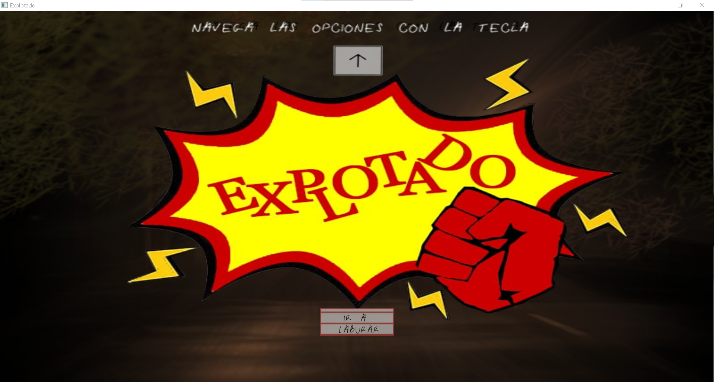
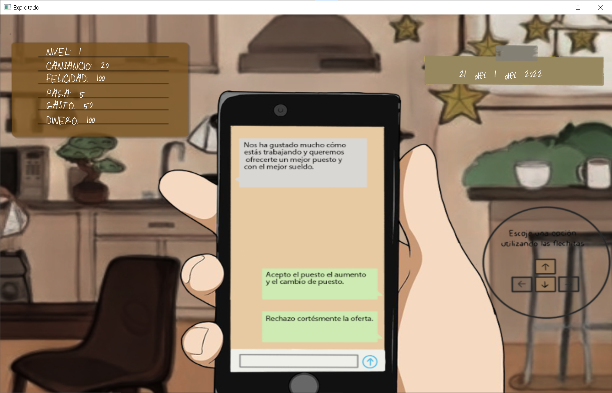
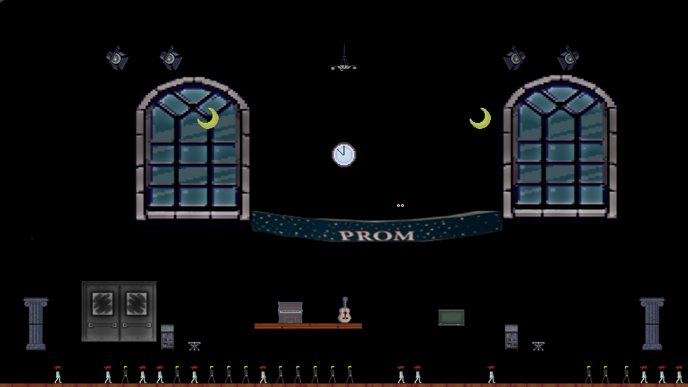

- 
- 
- 

Hola, mi nombre es Luciano Alfredo Colombo, soy un tecnico en computacion y estudiante avanzado (me quedan solo 3 materias) en la carrera de Licenciado en Artes Mutimediales, una carrera estratégica en el área de informática según el ministerio de educación, con conocimientos bastos de programacion creativa buscando su primer empleo, me apasionan las artes, el cine, la musica y los deportes.
Contactame a traves de mi Gmail lucianocolombo79@gmail.com.
O visualiza mis proyectos y mi portfolio en GitHub
© Apollo 2016 Luciano Colombo 2023